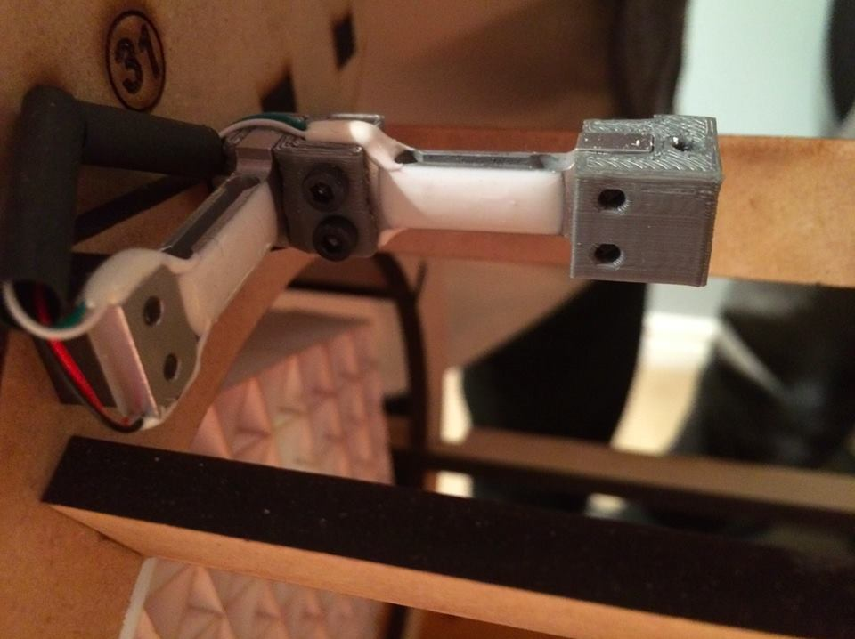
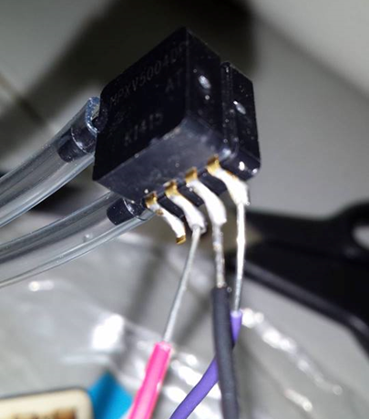

1315-MH Wind Tunnel
In AP Physics, we were challenged to build a device capable of measuring the forces of lift and drag on an airfoil and the speed of the air in the wind tunnel.
Before we started building, we were required to provide a complete report describing our designs for the project, the equipment we would use, and the research and theory that confirmed our hypotheses, proving that our designs will work.
Design Report: Design and Force Analysis of a Wind Tunnel
Upon completing the research, we decided to use load cells to measure lift and drag, a brushless motor from a RC aircraft to power the fan, a 7-segment display to show windspeed or forces, a differential pressure gauge to measure windspeed, and an Arduino Mega to control input from all the sensors.
 The load cells (left) were selected to be able to measure forces on the scale of millinewtons. The differential pressure gauge (right) measured the difference in pressure between each tube. One tube would be placed into the wind, and the other perpendicular to the flow. Thus, the reading could then be converted to a wind speed using Bernoulli's equations.


The final product was a structure laser cut from MDF and construction paper, with ports to accomodate the sensors, the battery for the fan, and the Arduino. The acrylic access hatch allowed easy visiblity into the tunnel and allowed airfoils to be placed inside easily. Overall, the wind tunnel worked as expected and read forces accurately.